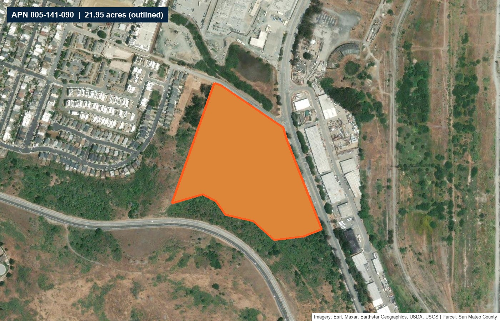
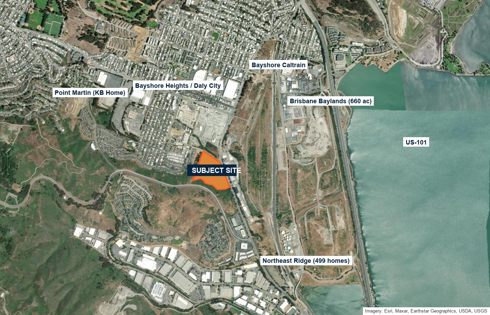
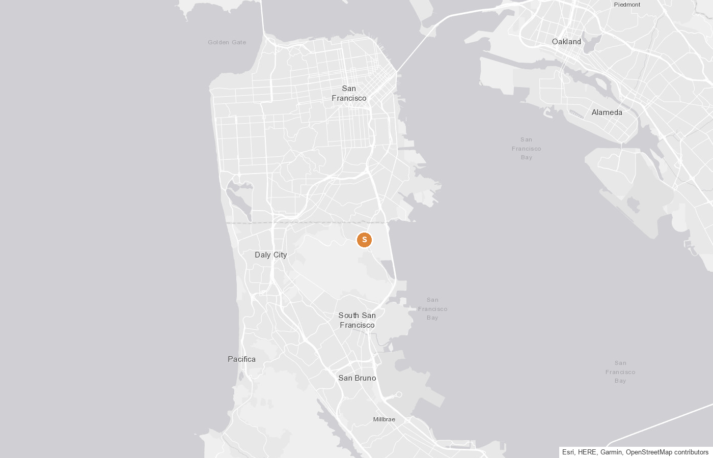
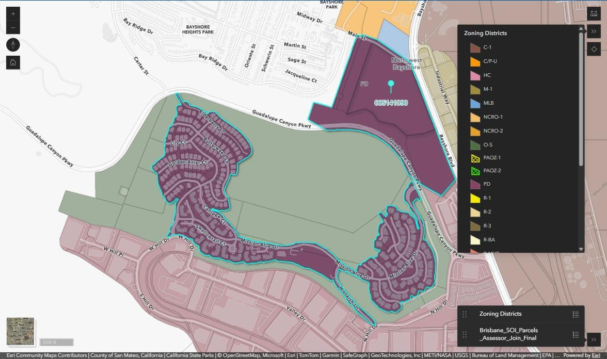
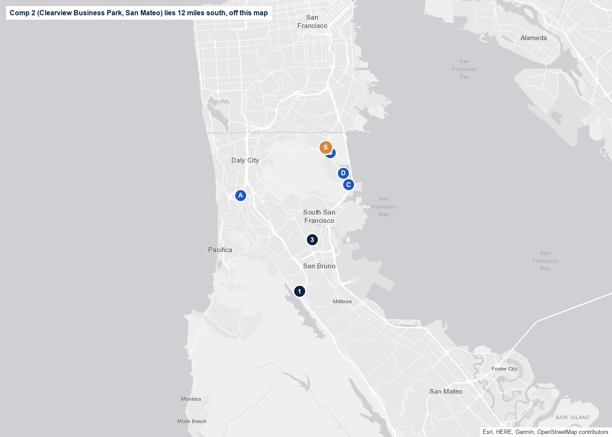

Executive Summary
The subject is a 21.95-acre vacant hillside parcel at the southwest corner of Bayshore Blvd and Main St in Brisbane, immediately south of the San Francisco city line and directly across Bayshore Blvd from the 660-acre Brisbane Baylands. It is the larger of the two parcels that make up the City's Guadalupe Hills General Plan subarea, and Brisbane's planning documents have referred to it for decades as the "Levinson" site. It is zoned PD (Planned Development District) and carries a General Plan designation of Planned Development, Subregional Commercial/Retail/Office, which requires a Specific Plan and an environmental impact report before any development. The parcel sits inside the San Bruno Mountain Habitat Conservation Plan boundary, the same framework under which the neighboring Northeast Ridge was entitled and built out with 499 homes between the 1990s and 2015.
Two things make this the right moment to value the site. First, on July 1, 2026 the State rescinded Brisbane's housing element certification because the City missed its May 18, 2026 deadline to rezone the Baylands, which puts Brisbane under the Builder's Remedy until the Baylands Specific Plan is adopted and the housing element is recertified; City Council hearings began September 3, 2026, so the window is measured in months. Second, the northern San Mateo County for-sale market has just reset its comps: Toll Brothers opened Crestmoor Estates in San Bruno on August 26, 2026 at roughly $2.1 million and up on a 40-acre site that traded twice on February 6, 2025, at $86.55 million to SummerHill and $99.1 million to Toll, and KB Home opened Point Martin townhomes in Daly City in January 2026 from $1.31 million. This opinion values the property as raw, unentitled land today, shows how each entitlement path changes the number, and is preliminary pending a title report, a biological survey, and closed-sale verification through CoStar.
Subject Property



The parcel is the lower slope of San Bruno Mountain's northeast flank. It climbs west from Bayshore Blvd toward PG&E's transmission corridor on its western edge, with the steepest ground in the upper southwest portion. The City's General Plan describes a wetland marsh at the northern end of the subarea (the Levinson Marsh, a detention basin the City rebuilt in the late 1990s), soils along the north edge affected by PG&E's former gasification plant to the north and subject to Department of Toxic Substances Control oversight, San Francisco Water Department lines crossing the subarea, slopes with a high erosion rate and moderate-to-high seismic landslide risk, and traffic noise of CNEL 65 dB or more within 300 feet of Bayshore Blvd. Access and utility infrastructure are described as limited. These are the items a buyer's due diligence will price, and they are the reason the General Plan routes this subarea through a Specific Plan rather than by-right zoning.
Zoning & General Plan Framework
Brisbane's General Plan carved the Guadalupe Hills out of the Northwest Bayshore subarea in 2018 to reflect its different character: two large vacant lots (the roughly 22-acre Levinson site, which is the subject, and the roughly 11-acre Peking Handcraft site) separate from the PG&E substation to the north. The designation is Planned Development, Subregional Commercial/Retail/Office. Under that designation retail, service, office and public uses are the primary uses, and residential, research and development, light industrial, and commercial recreation may be permitted conditionally in the implementing zoning. The zoning is PD, which the Housing Element describes simply as "subject to Specific Plan and PD Permit approval." No residential density has been set; the standard is written per Specific Plan.
General Plan standards, Guadalupe Hills subarea
| Standard | Requirement | Source |
|---|---|---|
| Entitlement path | One or more Specific Plans with CEQA documents (negative declaration, mitigated negative declaration, or EIR) prior to any development | Policy GH.1 |
| Intensity | 2.8 FAR per Specific Plan (commercial); no residential density stated | Land Use Table 1 |
| Open space | Minimum 25% of the land area dedicated to open space | Policy GH.4(c); PD designation |
| Habitat | Preserve habitat per the San Bruno Mountain Habitat Conservation Plan; study the upland slope, marsh-to-Bay hydrology and a habitat migration corridor with any development on the Levinson property | Policies GH.11, GH.13 |
| Form | Greenbelt separation from Daly City; visual impact analysis of building heights and view corridors; terrace with the slope, minimize grading and exposed retaining walls | Policies GH.2, GH.3, GH.5 |
| Residential | "Consider the concept of live-work residential development" | Policy GH.6 |
| Access | Investigate shared access and streets between the two parcels to minimize grading and the number of entrances from Bayshore Blvd | Policy GH.7 |
| Hazards | Avoid structures under or near transmission lines; remediate per DTSC and Regional Water Board approvals; consider noise insulation | Policies GH.15 to GH.17 |

The Northeast Ridge precedent
The slope directly south of the subject was entitled the same way. Southwest Diversified received Planned Development approval for 579 units in 1989; after the Callippe silverspot butterfly was listed the plan was reduced to 499 units (125 detached homes, 160 townhomes and 214 stacked flats) on about 92 developed acres of a 237-acre holding, with the balance dedicated as conserved habitat. The General Plan records its densities as 5 units per acre (Landmark), 10 (Viewpoint) and 15 (Altamar). Build-out ran from the 1990s to 2015. That is the template a Specific Plan for the subject would follow: cluster the homes on the lower slope, dedicate the upper slope, and mitigate under the HCP.
The Builder's Remedy Window
Brisbane adopted its 2023-2031 Housing Element on May 18, 2023 and was one of the first Bay Area cities certified by the California Department of Housing and Community Development (HCD). The element put almost all of the City's 1,588-unit allocation on the Baylands (1,800 units) and committed the City to adopt a Baylands Specific Plan within three years. The subject is not in the housing sites inventory. The City missed the May 18, 2026 rezoning deadline, and on July 1, 2026 HCD rescinded its finding of compliance. In the City's own words, while decertified Brisbane "is now subject to the Builder's Remedy," which allows housing projects that do not conform to local zoning to be proposed and potentially approved.
| Item | Status |
|---|---|
| Housing element certified | May 25, 2023 (adopted May 18, 2023) |
| Statutory rezoning deadline (Baylands) | May 18, 2026, missed |
| HCD rescission of compliance finding | July 1, 2026 |
| Baylands Specific Plan hearings | Planning Commission June 25, June 30, July 23 and August 13, 2026; City Council from September 3, 2026, with additional dates through the fall |
| Recertification | HCD has indicated an expedited review once the Specific Plan and rezoning are adopted, within its statutory 60-day window |
| What vests the remedy | An SB 330 preliminary application filed while the element is out of compliance; noncompliance is locked in as of that filing date |
What a Builder's Remedy project could look like here (AB 1893 rules, effective January 1, 2025)
| Rule | Application to the subject |
|---|---|
| Affordability | At least 13% of units for lower-income households, or 10% very-low-income, or 100% moderate-income |
| Density cap | The greatest of: 50% above the "default" lower-income density (20 units per acre for a suburban jurisdiction such as Brisbane, so 30 units per acre); three times the density allowed by the General Plan or zoning (none is set here); or the housing element density for the site (not an inventory site). The 35 units-per-acre transit add-on requires a major transit stop within half a mile; Bayshore Caltrain is about 0.85 mile away, so it likely does not apply. |
| Site eligibility | The General Plan designation allows retail and office, which qualifies. The site must also clear the SB 35 site-exclusion list: no wetlands, no habitat for protected species, no very high fire hazard zone unless mitigated, no unresolved hazardous-materials site. On this parcel that means the developable footprint is the portion a biological survey shows is outside butterfly habitat and the marsh, which is why the survey is the first dollar a buyer or ownership should spend. |
| CEQA | AB 130 (2025) exempts infill housing on sites of up to 20 acres from CEQA, but only 5 acres for a Builder's Remedy project, and the subject is 21.95 acres. A project on a defined portion of the parcel should be evaluated by counsel; otherwise the Housing Accountability Act process with CEQA applies. |
| Illustrative program | 30 units per acre on a 10-acre developable footprint is about 300 units; 13% lower-income is about 39 affordable units. Whether that footprint exists is the survey question above. |
Development Pathways
Four ways a buyer can underwrite the site. Unit counts assume a developable footprint of roughly 8 to 11 acres on the lower and mid slope, with the balance in open space and conserved habitat, and are planning-level estimates until a biological survey and slope analysis fix the footprint.
- The Northeast Ridge model: 10 to 15 units per acre on the buildable slope, upper slope dedicated under the HCP, 25% open space.
- Specific Plan, EIR, PD Permit, HCP compliance and a tract map; three to five years of entitlement.
- Exit is the Crestmoor Estates and Point Martin buyer at $1.3M to $2.1M+ per home.
- AB 1893 density of 30 units per acre on the eligible footprint, 13% lower-income set-aside, Housing Accountability Act processing.
- Preliminary application must be on file before HCD recertifies Brisbane, likely late 2026 or early 2027.
- Site exclusions (habitat, wetlands, fire zone) shape the footprint; the survey decides whether this pathway is real.
- The designation as written: subregional retail, office, R&D, commercial recreation, with live-work residential encouraged by Policy GH.6.
- Peninsula office and life-science land demand is at a cycle low in 2026; the Clearview campus in San Mateo just sold to be converted to homes.
- Useful as a fallback use and as leverage in the Specific Plan negotiation, not as the pricing basis.
- San Bruno Mountain Watch has named the Levinson property among the undeveloped lands it wants protected; the City, County Parks and the State Coastal Conservancy have bought Brisbane Acres habitat lots since 1998.
- Conservation buyers pay appraised fair market value for habitat land, historically a small fraction of development land value per acre.
- Best used as the exit for the upper slope inside Pathway A or B, or as HCP mitigation credit, rather than for the whole parcel.
Development-Land Comp Analysis
Large residential development sites rarely trade in northern San Mateo County, so the set below reaches from Daly City to San Mateo and includes the two active listings on Bayshore Blvd in Brisbane. Seven of the eight closed sales are CoStar confirmed records pulled September 11, 2026 (research complete, with document numbers), and Clearview is press-reported. Per-acre and per-unit figures use CoStar's land areas; unit counts come from the approving city's records.

Closed sales numbered in navy, active listings lettered in blue, subject in orange. Comp 4 (Clearview, San Mateo) is 12 miles south of the frame.
Closed Land Sales, December 2024 to July 2026
| # | Property / Status | Site Area | Entitlement at Sale | Price | $/SF Land $/Acre | Per Unit |
|---|---|---|---|---|---|---|
| 1 | 1477 Huntington Ave, South San FranciscoClosed Jul 2, 2026 | 1.98 ac 86,249 SF | Entitled, 262 units | $17,000,000 | $197.10 $8,585,859 | $64,900 / unit |
| Notes:Raintree Partners bought the fully entitled 262-unit, seven-story, transit-oriented site (39 affordable units, about half a mile from San Bruno BART) from Overton Moore Properties, which carried it through South San Francisco approvals in April 2023; sold for land value, redevelopment project, CBRE (Jon Teel) both sides. CoStar confirmed, comp 7757208. The entitled rental ceiling in northern San Mateo County and the per-door check for Pathway B. | ||||||
| 2 | 2001 Hillside Blvd, Daly CityClosed Jan 8, 2026 | 21.76 ac 947,734 SF | Not residential; cemetery assemblage | $21,780,000 | $22.98 $1,001,058 | n/a |
| Notes:Cypress Lawn Cemetery Association bought the two-parcel, 21.76-acre holding (with an 8,962 SF 1990 building; CoStar carries it as 65% improved) from Cypress Abbey Company as an assemblage for cemetery and mausoleum use, at full value after a 20-year hold. Not a housing comp, but the only closed sale of the subject's size in the Brisbane/Daly City submarket this cycle, two miles west, and a per-acre reference for large unentitled hillside acreage bought by an adjoining special-purpose owner. CoStar comp 7508778. | ||||||
| 3 | 7778 El Camino Real, ColmaClosed Dec 3, 2025 | 1.07 ac 46,646 SF | Raw; commercial with Housing Element Overlay | $3,150,000 | $67.53 $2,941,603 | n/a |
| Notes:Level, raw transit-oriented site sold by Scala Development to a private buyer after nine months on market; commercial zoning with Colma's Housing Element Overlay, marketed for apartments, condominiums or single-family homes; Marcus & Millichap Palo Alto (Kirk Trammell, Joshua Johnson) on both sides. The seller had paid $3,600,000 in June 2007, so the site cleared 12.5% below its 2007 price. The closest unentitled-residential print to the subject. CoStar confirmed, comp 7431476. | ||||||
| 4 | 3000-3155 Clearview Way, San Mateo (Clearview Business Park)Closed Sep 2025 | 22.0 ac 958,320 SF | Unentitled (office in place) | $102,000,000 | $106 $4,636,400 | $453,300 / planned unit |
| Notes:22-acre hilltop office campus (379,615 SF, six buildings, partially leased to GoPro) bought off-market by Harvest Properties and Stockbridge from Goldman Sachs Asset Management to re-entitle as up to 225 for-sale townhomes and single-family homes with 15% affordable. Price supported by in-place office income; unentitled for housing. Same acreage as the subject. Press-reported price (The Registry, The Real Deal); not in the CoStar set. | ||||||
| 5 | 177 S Airport Blvd, South San FranciscoClosed Jul 11, 2025 | 5.85 ac 254,771 SF | Sale-leaseback; industrial | $49,000,000 | $192.33 $8,377,877 | n/a |
| Notes:W.P. Carey bought the Hertz airport facility (65,676 SF, 400 spaces, PC zoning) from Hertz in a triple-net sale-leaseback; CoStar records it as sold for land value with a proposed industrial use. An income-backed industrial land ceiling next to SFO, not a residential comp. Kidder Mathews (Joseph Cammarata) and Minor Commercial. CoStar confirmed, comp 7265886. | ||||||
| 6 | 300 Piedmont Ave, San Bruno (Crestmoor)Closed Feb 6, 2025 | 40.41 ac 1,760,260 SF | Entitled, 155 homes | $86,552,000 then $99,100,000 | $49.17 then $56.30 $2,141,846 then $2,452,363 | $558,400 then $639,400 / lot |
| Notes:Two escrows the same day: the San Mateo Union High School District sold the former Crestmoor High School campus to SummerHill Homes for $86,552,000 after SummerHill carried the 155-home approval through the City (4 years 10 months on market), and SummerHill sold to Toll Brothers for $99,100,000 in the second leg. Sloping, previously developed R-1 site outside the HCP; DCG Strategies (Landis Graden). Toll opened Crestmoor Estates on August 26, 2026 from about $2.1 million. CoStar confirmed, comps 7071985 and 7081881. The entitled for-sale ceiling for the set. | ||||||
| 7 | 850 Glenview Dr, San BrunoClosed Jan 29, 2025 | 3.28 ac 142,877 SF | Approved, 58 townhomes | $13,500,000 | $94.49 $4,115,848 | $232,800 / unit |
| Notes:City Ventures bought the closed church and vacant land with an approved 58-unit (9 affordable), nine-building townhome program in the P-D / R-1 district, now under construction as The Highlands. No off-site utilities in place at sale; sloping San Bruno hillside. Full-value price. The approved for-sale townhome print per unit. CoStar comp 7077900. | ||||||
| 8 | 840 W San Bruno Ave, San BrunoClosed Dec 13, 2024 | 1.62 ac 70,724 SF | Proposed, 341 affordable units (SB 330) | $17,280,000 | $244.33 $10,643,016 | $50,700 / proposed unit |
| Notes:JEMCOR Development Partners recapitalized its own site with Pacific Housing (seller and buyer are JEMCOR entities) for a two-tower, ten-story, 341-unit 100% affordable project near San Bruno Caltrain, filed under SB 330. A related-party recapitalization rather than an arm's-length land trade, so a capital-stack mark for affordable land per door. Prior sale $17,800,000 in January 2022. CoStar confirmed, comp 7011376. | ||||||
Active Competing Listings
| # | Property / Status | Site Area | Entitlement | List Price | $/SF Land $/Acre | Per Unit |
|---|---|---|---|---|---|---|
| A | 239 Serramonte Blvd, Daly CityListed Mar 27, 2026 | 6.24 ac 271,814 SF | Entitled, 499 units | $68,000,000 | $250 $10,897,400 | $136,300 per unit |
| Notes:Fully entitled 499-unit (plus one manager's unit) four-building high-rise site adjacent to Serramonte Center, marketed for rental, condominium or hybrid; AGH Realty Group. The entitled multifamily ceiling in northern San Mateo County. | ||||||
| B | 3100 Bayshore Blvd, Brisbane (adjoining)Listed since 2018 | 9.36 ac 407,722 SF | Unentitled, M-1 | Undisclosed | n/a n/a | n/a |
| Notes:APN 005-141-100, 9.36 acres zoned M-1, the other Guadalupe Hills parcel; marketed by Kidder Mathews for office development since January 2018 with no disclosed price and no sale. Eight years on the market is the clearest signal of what unentitled commercial land on this slope is worth. | ||||||
| C | Bayshore Blvd, Brisbane (four R-1 lots)Listed 2021, unsold | 4.30 ac 187,308 SF | R-1 hillside, unentitled | $3,200,000 (combined ask) | $17.08 $744,200 | n/a |
| Notes:APNs 007-250-010, 007-350-130, 007-350-140 and 007-350-160, 4.3 hillside acres in the Southwest Bayshore area with Bay views, listed October 2021 at a combined $3,200,000 across the four lots; no longer advertised and no recorded sale found. Buyer was told to verify permitted uses with the City. | ||||||
| D | 3750-3780 Bayshore Blvd, BrisbaneActive | 2.0 ac 87,120 SF | PD, 30 condos approved (2005) | Price on request | n/a n/a | n/a |
| Notes:2.0 acres per the listing (2.9 acres per the City), PD-zoned, with a 30-unit residential condominium approval granted in 2005 that has sat in permit review since; Norcal Realty, price upon request. | ||||||
Sources: CoStar sale comps 7757208, 7508778, 7431476, 7265886, 7071985, 7081881, 7077900 and 7011376 (export dated September 11, 2026, in the deal file); The Registry, The Real Deal and REBusinessOnline (Clearview, September 2025); City of South San Francisco and City of San Bruno approval records for unit counts; LoopNet listings for 239 Serramonte Blvd, 3100 Bayshore Blvd, 3750-3780 Bayshore Blvd and the Bayshore Blvd R-1 lots, checked September 11, 2026. Not shown as comps: the Brisbane Baylands (2,200 units in the pending Specific Plan, not for sale), the Pacifica Quarry (86 acres, Builder's Remedy application for 1,225 units, purchase price not public) and Serramonte Del Rey in Daly City (1,235 units on school-district ground lease).
What conservation buyers pay
In April 2008 the State Coastal Conservancy authorized up to $242,500 toward the City of Brisbane's purchase of five Brisbane Acres parcels totaling 6.4 acres of Mission Blue and Callippe habitat on the upper slope of San Bruno Mountain, matched by City and federal funds, at appraised fair market value. Even allowing for the match and eighteen years of appreciation, habitat land on this mountain has traded at a small fraction of the development-land figures above. That is the floor for the subject's upper slope, and it is why the developable footprint, not the gross acreage, carries the value.
Finished-Product Values: What the Homes Would Sell For
Pathway A's exit is a for-sale home on a Brisbane hillside. Two new communities opened in the last eight months within five miles of the subject and set the new-construction bar; Brisbane's own resale market, including the Northeast Ridge homes on the same slope, sets the resale band. Resales below are MLS closings reported by Movoto, checked September 11, 2026; each address links to its Zillow page, and each community name links to its Zillow community page.
New construction, opened 2026
| Community | Product | Size | Pricing | $/SF (approx.) |
|---|---|---|---|---|
| Crestmoor EstatesToll Brothers, San Bruno · opened Aug 26, 2026 · Montara Collection on Zillow | 155 detached homes, 4 bd / 3 ba, 2-car garage, two collections | 2,300 to 2,800 SF | From about $2,100,000 | $750 to $910 |
| Point MartinKB Home, Daly City (Carter St & Saddleback Dr) · opened Jan 30, 2026 · 132 homes | Three-story townhomes, up to 4 bd / 4 ba | 1,835 to 1,994 SF | $1,311,990 to $1,383,990 | $694 to $715 |
Brisbane resales, closed May to August 2026
| Address | Area | Bd / Ba | SF | Sale Price | $/SF | Closed |
|---|---|---|---|---|---|---|
| 150 Elderberry Ln | Northeast Ridge | 5 / 4 | 3,440 | $2,600,000 | $756 | Aug 21, 2026 |
| 146 Elderberry Ln | Northeast Ridge | 3 / 2.5 | 2,127 | $1,960,000 | $922 | Jul 13, 2026 |
| 285 Humboldt Rd | Central Brisbane | 3 / 3.5 | 2,417 | $1,757,500 | $727 | Aug 12, 2026 |
| 480 Klamath St | Central Brisbane | 3 / 2 | 2,211 | $1,575,000 | $713 | Aug 10, 2026 |
| 153 Golden Eagle Ln | Northeast Ridge | 3 / 3 | 2,273 | $1,300,000 | $572 | May 29, 2026 |
| 141 Kestrel Ct | Northeast Ridge | 2 / 2 | 1,413 | $938,888 | $665 | May 20, 2026 |
| 633 Swallowtail Ct | Northeast Ridge | 3 / 2 | 1,550 | $815,000 | $526 | Jul 27, 2026 |
| 332 Crescent Ct | Northeast Ridge | 2 / 2 | 1,242 | $785,000 | $632 | May 12, 2026 |
Key Takeaways
Twenty-two contiguous acres, one parcel, one owner, on a boulevard, eight miles from downtown San Francisco, inside a city that has entitled exactly this kind of hillside community before. Two sites of this scale traded on the Peninsula in the last two years: Clearview in San Mateo (22 acres, $102 million with office income attached) and 2001 Hillside Blvd in Daly City (21.76 acres, $21.78 million to a cemetery association).
Habitat, the marsh, the transmission corridor, slope and the 25% open-space minimum mean that roughly 8 to 11 acres of the 21.95 will carry the homes. Every buyer will price the parcel on that footprint. A biological survey and a slope study, at low cost, turn a guess into a number and are the first items for the data room.
Crestmoor cleared at $558,400 and then $639,400 per entitled lot in back-to-back escrows, and the 58-townhome Glenview site in San Bruno at $232,800 per approved unit. Raw hillside land that still needs a Specific Plan, an EIR and HCP clearance is worth a fraction of that per lot today. The gap between the two is the value ownership or a land entitler can create over three to five years, and it is the reason the buyer pool for this site is builders and entitlers rather than end users.
Brisbane is decertified today and will likely be recertified within months of adopting the Baylands plan this fall. A preliminary application filed before that date vests the Builder's Remedy on this parcel; nothing filed after it does. Filing costs little and adds a second buyer pool that underwrites per door rather than per lot.
The adjoining 9.36-acre M-1 parcel has been marketed for office use since 2018 without a sale, and 4.3 acres of R-1 hillside lots on Bayshore Blvd have sat since 2021 at $744,000 per acre. Unentitled land on this slope does not sell on a per-acre ask; it sells on a program. Pricing the subject on its program, not its acreage, is what separates it from those listings.
Toll Brothers and KB Home both opened new communities within five miles in 2026, and Brisbane's own resales on the Northeast Ridge are clearing at $750 to $920 per SF for detached homes. A builder does not have to imagine the end buyer for this site; the end buyer is already writing contracts a few miles away.
Pricing Recommendation
Basis of the recommendation. The opinion is built on Pathway A, a 100 to 150 home Specific Plan community, valued from the finished-home comps back to the land and then discounted for the entitlement that has not happened yet. A detached home of about 2,400 SF sells today for $1.9M to $2.1M on the Northeast Ridge and at Crestmoor Estates. Toll Brothers' $639,400-per-lot Crestmoor purchase implies roughly $1.3M to $1.4M per home of all-in cost excluding land on a graded site; a hillside site with HCP mitigation, retaining structures, off-site drainage and Bayshore Blvd improvements runs closer to $1.5M. At a 15% builder margin on a $2.0M home that leaves about $200,000 per lot for entitled land, or $20M to $25M for 100 to 125 lots, which is the "if carried to approval" figure above. Discounting that number for three to five years of Specific Plan, EIR and HCP process, the soft cost of getting there, and the real possibility that the surveyed footprint supports fewer lots, produces the $10.5M to $12.5M as-is range: 45% to 55% of entitled value, which is where raw land with a multi-year entitlement path has traded against finished lots in this cycle.
Cross-checks. On a per-gross-acre basis the range is $478,000 to $569,000, about half the $1,001,058 per acre a cemetery association paid for the same-sized 2001 Hillside Blvd assemblage two miles west in January 2026, and below the $744,000 per acre at which the unsold Bayshore Blvd R-1 lots have been offered since 2021; on the roughly 10 developable acres it is $1.05M to $1.25M per acre, which brackets the Hillside print. On a per-lot basis, $84,000 to $100,000 per raw lot at 125 homes is 36% to 43% of the $232,800 per approved townhome unit City Ventures paid at Glenview in San Bruno, a reasonable raw-to-approved spread for a site that still needs a Specific Plan. On a per-door basis, a 300-unit Builder's Remedy program prices the range at $35,000 to $42,000 per door, well below the $64,900 per entitled door Raintree paid at 1477 Huntington in July 2026 and a fraction of the $136,300 per entitled door asked at Serramonte, so a rental or attainable-housing developer can reach the same number from a different direction. On a per-SF basis, $11 to $13 per SF of land is roughly one-fifth of the $49 to $56 Crestmoor cleared at with entitlements, one-fifth of the $67.53 the raw Colma overlay site cleared at, and one-tenth of Clearview's $106 with income in place.
Suggested list price. $12,950,000, which is about 4% above the top of the opinion range and leaves room for the two buyer pools to compete. The list price should go out with, at minimum, a biological survey, a slope and constraints map, the DTSC file for the north edge, and a filed Builder's Remedy preliminary application. Each of those items moves the offering from "22 acres of hillside" to "a program on a footprint," and each is cheap relative to the spread it protects.
What would change the number. Up: a survey that shows 12 or more developable acres; a vested preliminary application at 30 units per acre; confirmation that the parcel is outside the Very High Fire Hazard Severity Zone; or a Baylands approval that brings a Bayshore Blvd streetscape and infrastructure to the frontage. Down: a surveyed footprint under 8 acres; a VHFHSZ designation covering the buildable slope; an unresolved DTSC condition on the north edge; or a City position that residential is not a conditional use the Specific Plan will entertain. The last item is the one to test with the Community Development Department before launch.
This opinion is preliminary. It has not been verified against recorded deeds, a title report, a biological survey, a geotechnical report or a fire-hazard map, and the closed sales should be confirmed through CoStar and the San Mateo County Recorder before the document is shared with a client. It is not an appraisal.
The Listing Team
This assignment is presented by The LAAA Team and The Ziegler Group, both of Marcus & Millichap's Encino office.
filip.niculete@marcusmillichap.com
CA DRE #01905352

matt.ziegler@marcusmillichap.com
CA DRE #01280909

glen.scher@marcusmillichap.com
CA DRE #01962976


The LAAA Team · Marcus & Millichap · 16830 Ventura Blvd, Suite 100, Encino, CA 91436 · www.laaa.com
Also Marketed by the LAAA Team
Active land and development-site listings, showing how development buyers are pricing entitled and unentitled land across Southern California today:
Active laaa.com land listings as of September 11, 2026, excluding properties in escrow.